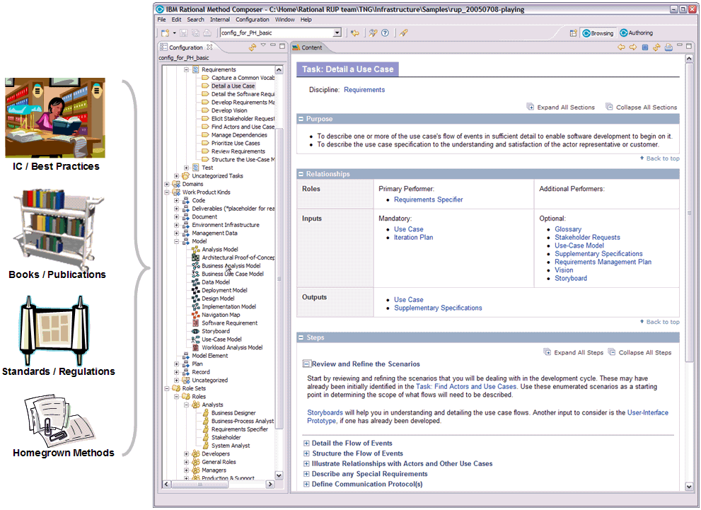

Method content describes roles, the tasks that they perform, the work products that are used and produced by those tasks, and supporting guidance.

The figure above depicts typical sources for method content, as well as how the method content is represented in RMC. Many development methods are described in publications such as books, articles, training material, standards and regulations, and other forms of documentation. These sources usually document methods by providing step-by-step explanations for a particular way of achieving a specific development goal under general circumstances. Some examples are: transforming a requirements document into an analysis model; defining an architectural mechanism based on functional and non-functional requirements; creating a project plan for a development iteration; defining a quality assurance plan for functional requirements; redesigning a business organization based on a new strategic direction, and so on.
RMC takes content such as that described above, and structures it in a specific schema of roles, work products, tasks, and guidance. This schema supports the organization of large amounts of descriptions for development methods and processes. Such method content and processes do not have to be limited to software engineering, but can also cover other design and engineering disciplines such as mechanical engineering, business transformation, sales cycles, and so on.
The RMC screen capture in the figure above shows how such method content elements are organized in tree browsers on the left. These tree browsers, similar to a library, provide different indexes of the available elements for rapid access. The screen capture shows on the right an example of a task presentation. This task presentation defines the task in terms of steps that need to be performed to achieve the task's purpose. You can see that the task has various relationships, such as relationships to performing roles as well as work products that serve as inputs and outputs to the task. Find out more details on tasks, role, and work products in the online help here. In addition to roles, tasks, and work products, RMC supports the addition of guidance elements. Guidance are supplementary free-form documentation such as whitepapers, concept descriptions, guidelines, templates, examples, and so on.
RMC provides various form-based editors to create new method content elements. Document your task, roles, work products, and guidance elements using intuitive rich-text editors that allow you to copy and paste text from other sources such as web pages or documents. Use simple dialogs to establish relationships between content elements.
RMC organizes content in physical content packages that allow you to manage your content in configurable units. RMC also allows you to categorize your content based on a set of predefined categories (for example, categorize your tasks into development disciplines, or your work products into domains) or create your own categorization schemes for your content with your own user-defined categories that allow you to index content in any way you want.
For more details on method content authoring see the online help: